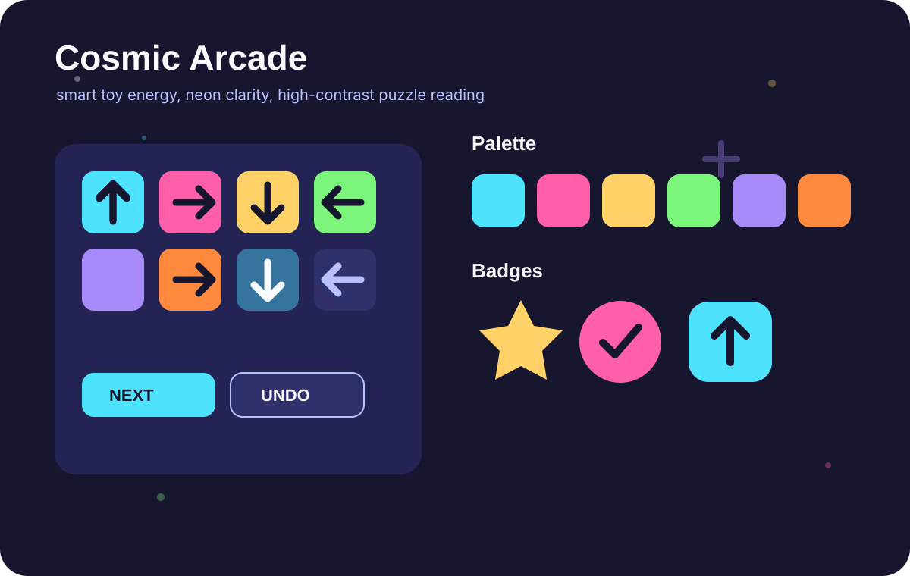
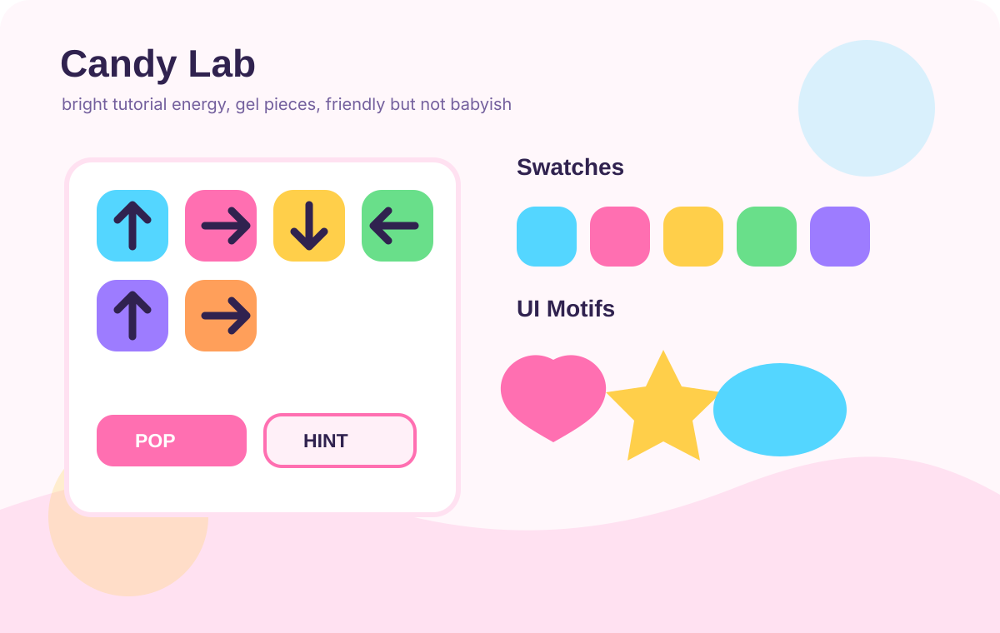
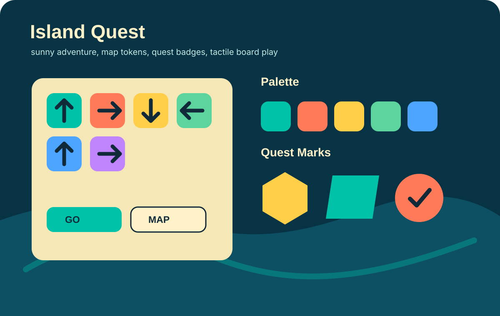
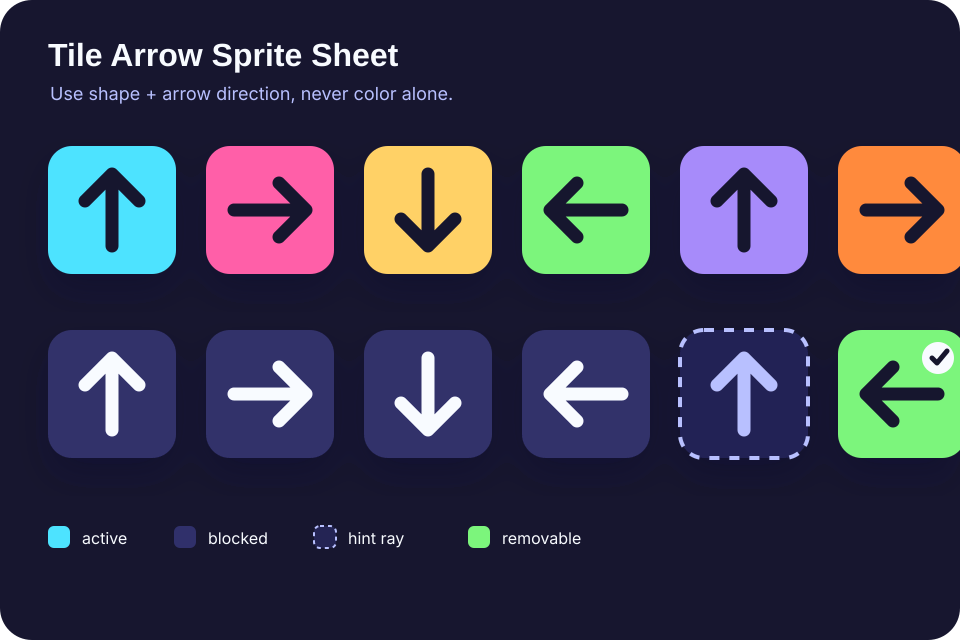
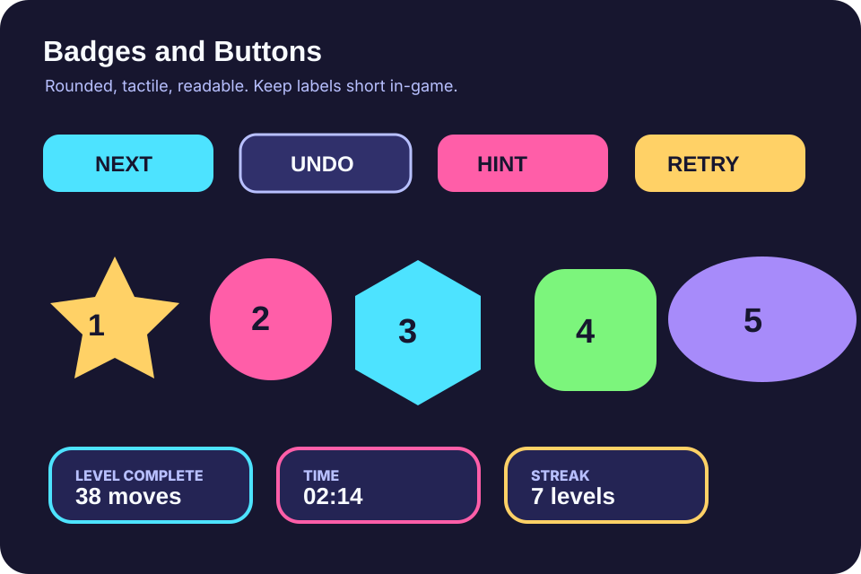
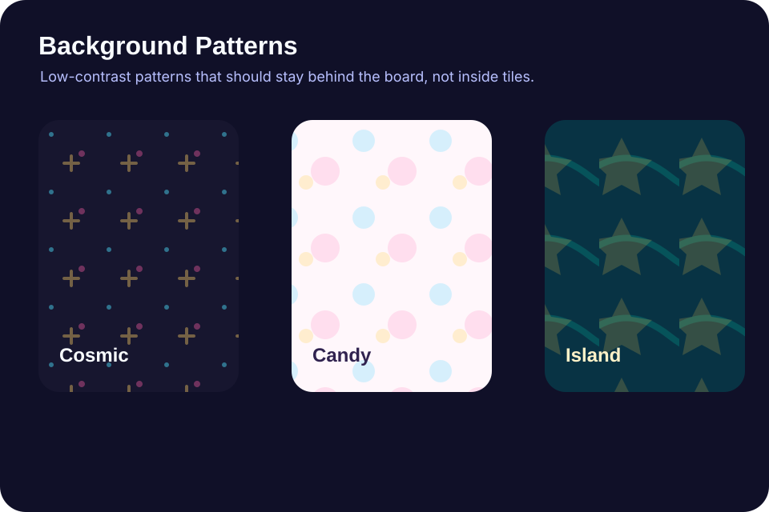

Preteen Tile Puzzle Assets
Three visual directions for a mobile and desktop browser puzzle. Cosmic Arcade is the recommended default because it keeps the board high contrast while still feeling energetic.
Visual Directions


Palettes
Cosmic Arcade
Candy Lab
Island Quest
Game Assets


